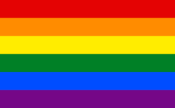

La bandera LGBT también denominada bandera LGTB+, bandera del orgullo, bandera Universal, y otras denominaciones equivalentes, es una bandera multicolor, que simboliza los movimientos de las orientaciones sexuales e identidades de género
tradicionalmente discriminadas y perseguidas, así como el orgullo de pertenecer a ellas. Existen otras banderas LGBT y también LGBT+ y pese a no existir un acto que la establezca como bandera oficial del movimiento, es la más utilizada.
Tiene seis franjas horizontales de diferentes colores, en el siguiente orden de arriba abajo: rojo, naranja, amarillo, verde, azul y violeta.
La bandera del orgullo LGBT fue popularizada en 1978 como símbolo del orgullo gay por su creador, Gilbert Baker, artista nacido en Kansas. La versión original, con ocho franjas multicolores en sentido horizontal, fue diseñada a
pedido del líder gay Harvey Milk. La versión actual consiste en seis franjas de colores rojo, naranja, amarillo, verde, azul y violeta, que reproducen el orden de los colores del arcoíris. No obstante, posteriormente fue adoptada como
la "bandera de la diversidad", aunque los integrantes del colectivo remarcan su origen e identificación con su causa.